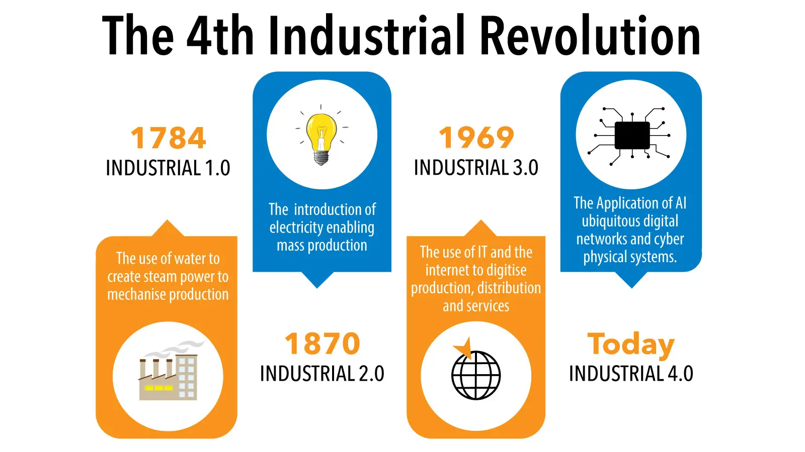
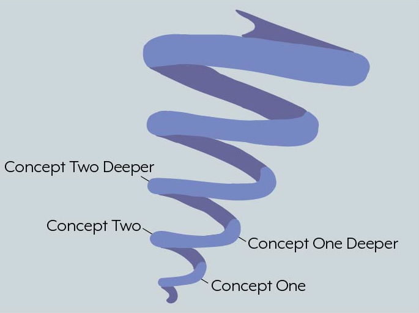

A, rather, Functional Approach to ML for all practical purposes
Arc 1 of the ML Leadership Spiral
8 min read
For course details, jump to the Outcome and Course Structure sections

Why consider ML at all?
From our news feeds to product recommendations, from ticket prices to promotional offers, from our internet browsing patterns to online/offline purchase behavior, we are being watched. By an AI, 24/7. Welcome to the 4th Industrial Revolution. We may like it or not, but we have to, as a country, engage with this revolution if we have to create meaningful value for us as a society. But, if we do not engage on our terms, it is very likely that we may become puppets by AI-enabled countries/enterprises that may fully dictate our behavior and finally be consumed by it. There is always an AI watching us - on our phones, on our browsers, on our smart televisions, smart refrigerators, and ubiquitous digital assistants like Alexa or Google Nest. To engage with AI on our terms, we should not only understand the technology and science behind AI but also the economics and pragmatics of AI. Hence, my effort to make it a little easier for future professionals to make this engagement seamless. Hence, this series of courses, of which this workshop aspires to be the curtain-raiser. Welcome aboard!
The Problem and a Practical Solution
First, thanks for your time. Let me use this opportunity to share some of my concerns. In my decade-long experience in machine learning in the corporate world, skill is a scarce resource. Of late, I have come to realize that skill is not proportional to knowledge acquisition. That’s a myth. Rather, skill is about
- the tenacity to methodically engage with a problem
- experimenting with solutions
- lots of experimenting and benchmarking
- observing, learning and fine-tuning the experiments.
- cultivating discipline to experiment
Knowledge is the by-product. Prudent experimentation is the means. Experimenting is the hallmark of skill development. We, as a society, have not encouraged experimenting enough. Especially, in engineering studies. Hence, the sorry state of talent in this country. Deep technologies like AI, VLSI, Communication technologies, Power Systems, Quantum Computing, Cryptology, and so forth need experimenting at the deepest levels.
Through these series of courses, I try to invert the learning process into a top-down approach. We experiment and learn.
We code what we wish to experiment and we learn in the process. We code what we learn and we experiment yet again.
We begin with building models with high-abstraction libraries and see for ourselves how these models work. We learn the science behind it. We code a bit. We model again. And then we dig a little deeper.
Here’s my practical idea to master a field of study:
- Study a problem
- Try to understand “why” it is a problem
- Learn a probable solution
- Code the solution
- Examine the solution to know why it is sub-optimal
- Learn a better solution
- Need some math? Take a math detour
- Get back to code
- Repeat
… and this is how learning compounds!

Outcome of the Session
- Develop disciplined thinking about ML problem-solving
- Develop a method to approach solution-design
- Develop a taste and intuition for ML methods
- Be able to appreciate how simple mathematics can tackle really hard problems
- Be able to develop an approach to learn more ML on your own
- Be able to appreciate the economics of ML
- Become aware of the negative impact of data privacy and powerful ML models
Course Structure
The course is spread across 3 to 3.5 days. The day-wise breakup will be provided at the beginning of the course.
- Let’s begin by building a classifier…in 5 mins :)
- An appreciation for modern-day ML tooling
- So, what is learning from data?
- Understanding the notion of “learning a function”
- “Flexible” functions can learn just about anything
- The Notion of “cost function”
- Calculus primer to minimize cost functions
- Neural Network Foundations
- An Object Recognition example
- Neural Nets as function learners
- Adjusting Weights and Biases - Backpropagation
- Coding the learning loop
- Data Ethics
- The Power and Dangers of Data
- Why should one be careful when it comes to dealing with data?
- Privacy
- Data Ownership
- Policies
- Building a Neural Nets from Scratch
- Stochastic Gradient Descent
- The MNIST Loss Function
- Sigmoid
- Stochastic Gradient Descent and Mini-Bacthes
- Creating an Optimizer
- Random Forests
- How do they work?
- Discussion: Statistical Modeling: The Two Cultures by Leo Breiman
- Surprise!
- Discussion: Why do tree-based methods still outperform deep learning on tabular data by Grinsztajn et al
Logistics
- The course structure is kept deliberately fluid - the content remains the same, and the sequence may vary during the course based on student response and engagement levels
- The course is spread over 3 - 3.5 days
- Access to high-speed stable internet will help make the course engaging
- Students are advised to bring their laptops so that they can code along
Prerequisites
- Working knowledge of Python 3.0
- Familiarity with any of the notebook programming environments - Jupyter notebook or Google Colab
- Some working knowledge of matrices in linear algebra and calculus is good to have but NOT mandatory
Future
The ML Leadership Programme is structured as follows:
- Arc 1/Functional ML: A functional bootstrap introduction to ML
- Arc 2/Poetic Dabbling in ML: What follows is a deep dive into the math and science of ML
- Arc 3/Pragmatic ML: Reconciling the Science and Economics of ML, aimed at aspiring deep tech specialists and ML entrepreneurs